TEZAUR
Un model de limbaj scrie frumos. Și poate inventa.
O teză se apără pe pagini, nu pe verosimil. Un citat greșit, o cifră schimbată sau o sursă care nu există te costă mai mult decât orice frază bună.
Chat generic
Autor, pagină și cifră — plauzibile, nevalidate. Nimeni nu știe de unde vin.
TEZAUR
[1] → sursa ta, pagina și pasajul exact. Dacă nu găsește nimic, spune „nu am găsit”.
Nu „antrenezi pe cărți”. Legi fiecare frază de o pagină.
Modelul nu învață nimic din biblioteca ta. O citește la fiecare întrebare — doar pasajele regăsite — și are voie să scrie numai din ele.
Biblioteca ta
PDF, DOCX, EPUB, MD, HTML, TeX. OCR. Zotero și .bib.
Index
BM25 + embeddings opționale, fuziune RRF. Pasaje cu pagină.
Regăsire
Cele mai relevante pasaje, cu % din termenii întrebării acoperiți.
Model local
Ollama, Jan, LM Studio… scrie doar din pasaje, cu [n].
Audit
Verifică mecanic dacă pagina citată acoperă fraza.
Interfețe: CLI · aplicație web · extensie de browser · MCP pentru asistenți AI · ~40 de integrări.
Scrie o frază. Citează o pagină. Vezi dacă rezistă.
demo_sursa)p. 12Părțile recunosc calificările obținute în alt stat, cu excepția cazului în care se demonstrează o diferență substanțială. Sarcina probei revine autorității care evaluează calificarea.
p. 47Perioada de adaptare nu poate depăși trei ani. Testul de aptitudini se organizează în termen de șase luni de la cerere.
p. 88Autoritățile competente răspund în termen de patru luni de la depunerea dosarului complet.
Aceeași euristică ca în tezaur audit (suprapunere de termeni + control al cifrelor + pagină probabilă), reimplementată aici în JavaScript. Ultimele două exemple sunt limitele ei reale — pentru ele există --semantic.
12 verdicte. Fără model, fără cont, fără cloud.
Rulează în CI ca un linter pentru teza ta: tezaur audit teza.md --fail. Merge pe Markdown, LaTeX și LyX.
Pasajul de la pagina citată acoperă fraza.
Doar o parte din termeni se regăsesc.
Sursa nu spune asta nicăieri.
Fraza e în sursă, dar la altă pagină — o indică.
Cifra din text lipsește din pasaj („cinci” vs „trei”).
Cheia citată nu există în bibliotecă.
Pagina depășește numărul de pagini al documentului.
Afirmație lungă fără nicio citare.
Citatul din ghilimele e ad litteram în sursă.
Citatul e într-o altă sursă.
Citatul nu există nicăieri în bibliotecă.
Doar cu --semantic: modelul vede contrariul.
Chitanță pentru fiecare răspuns. Declarație de utilizare AI, gata scrisă.
tezaur ask "…" --receipt r.json leagă prin SHA-256 întrebarea, modelul, răspunsul și fiecare pasaj folosit. Mai târziu poți dovedi că nimic nu a fost modificat și că pasajele încă există în index.
tezaur declare r.json --lang ro scrie declarația pe care o cer tot mai multe universități și reviste.
Dovadă de integritate, nu semnătură de identitate și nu dovadă că afirmația e adevărată. Opțional, HMAC cu cheia ta.
"question": "Cine poartă sarcina probei?", "model": "llama3.1:8b", "answer_sha256": 9f2c…e41a, "excerpts": [ { "doc": "demo_sursa", "page": 12, "sha256": b77d…03c9 } ], "index_fingerprint": 4a1e…d2f0, "seal": c80b…77fe $ tezaur receipt r.json ✓ chitanța e neatinsă ✓ răspunsul se potrivește ✓ pasajele există în index
Mai rapid. Mai atent. Și, doar dacă vrei, conectat la lume.
Căutare în CLI, 6 milioane de cuvinte
Cache BM25 pe disc, reconstruit automat când se schimbă biblioteca.
Ce s-a mai adăugat
- audit --semantic a doua opinie a modelului tău
- refs chei lipsă, intrări necitate
- eval recall@k și MRR pe întrebările tale
- lit căutare OpenAlex/Crossref → BibTeX
- refs --online DOI inexistent, lucrare retrasă
Ultimele două sunt opt-in și singurele care ies pe internet.
Tabelele rămân tabele. Ecuațiile rămân ecuații.
În terminal
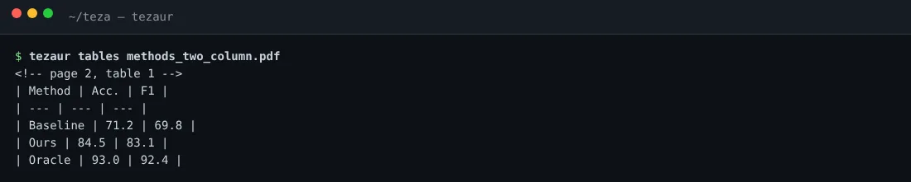
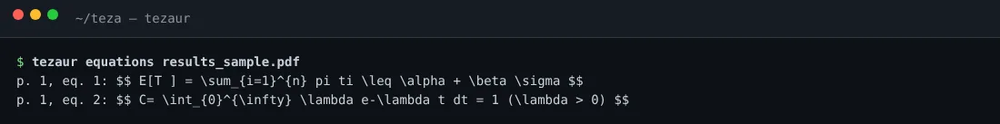
Ieșire reală a comenzilor tables și equations pe PDF-uri de test.
În căutare și în aplicația web
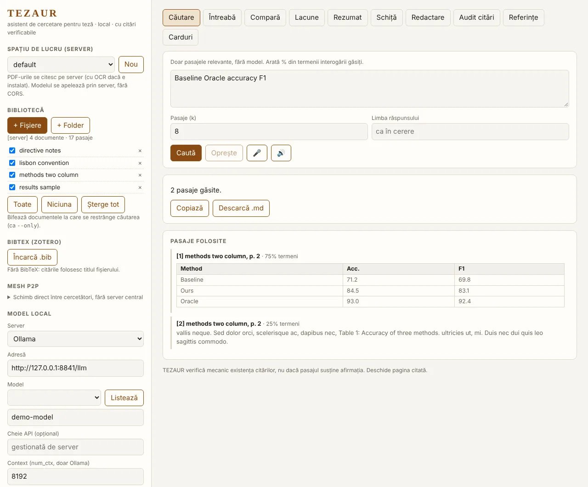
Un tabel e un singur pasaj (legenda primește tabelul, antetul se repetă dacă se împarte). Pagina cu două coloane se citește coloană cu coloană.
Limite oneste: euristică peste stratul de text poppler; coloane foarte strânse, celule pe mai multe rânduri, tabele-imagine, fracții suprapuse, matrici și indici nu se reconstruiesc. Nu înlocuiește Nougat/MinerU. Testat doar pe PDF-uri LaTeX de laborator.
Bibliografia, luată în serios.
Totul e aditiv: fără niciun flag și fără variabile de mediu, TEZAUR se poartă exact ca în 0.4.0.
Referințe și surse
- BibTeX complet @string, concatenări, crossref, avertismente
- RIS · CSL JSON import; export CSL mai bogat
- bib --duplicates dubluri după DOI / ISBN
- oai recoltare OAI-PMH, mapare Dublin Core
- Crossref client politicos, cache, lucrări retrase
Clienții de rețea sunt opt-in; oai -o nu suprascrie niciodată un fișier nevid.
Citări și căutare
- Localizatori etichete, intervale, cifre romane
- EPUB numerele paginilor tipărite
- Unicode NFKD, diacritice, cuvinte UAX #29
- --phrases fraze exacte și proximitate
- Chitanțe v2 RFC 8785, SHA-256 (TEZAUR_RECEIPT_FORMAT=2)
Interfața web vorbește acum 8 limbi; pdf.js e inclus local, fără CDN.
Limite oneste: modelul e al tău, TEZAUR verifică mecanic citările, nu demonstrează afirmații; paginile surselor fără paginare (.md, .txt) nu pot fi verificate; depozitele APT/RPM sunt nesemnate.
0.5.4 · manifestele scoop și winget au versiune și sume de control reale; formula Homebrew indică 0.5.3.
0.5.3 · cardul „Primii pași” se aranjează corect pe telefon; CI și lansările rulează pe Ubuntu 26.04 și Node 24 (binarele Linux rămân construite pe 24.04, ca să meargă și pe distribuții mai vechi).
0.5.2 · interfață mai prietenoasă: card „Primii pași”, tragere de fișiere și foldere în fereastră, mesaje non-blocante cu „Anulează” la ștergere, copiere cu confirmare, ciornă salvată, Esc oprește rularea, tabele cu antet fix și zoom automat.
0.5.1 · corecturi din recenzia adversarială: serverul nu mai cade la un Content-Length uriaș, exportul LaTeX nu mai lasă comenzi din citări, caracterele de control din surse externe sunt eliminate, iar oai urmează redirecționări doar spre arhiva numită.
Toate funcțiile, în capturi reale.
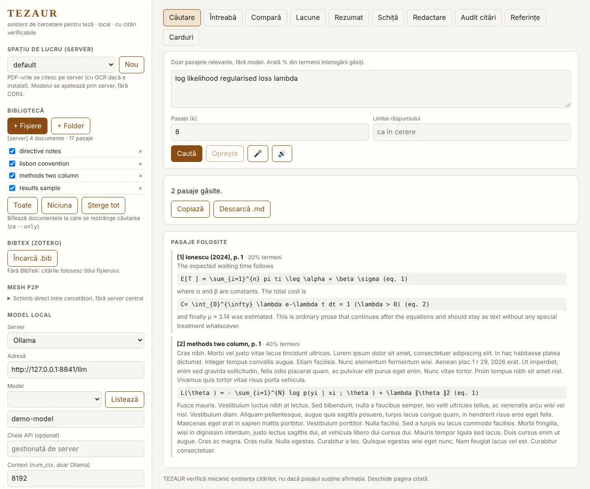
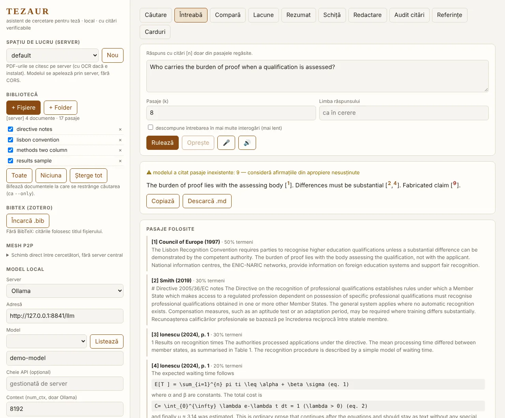
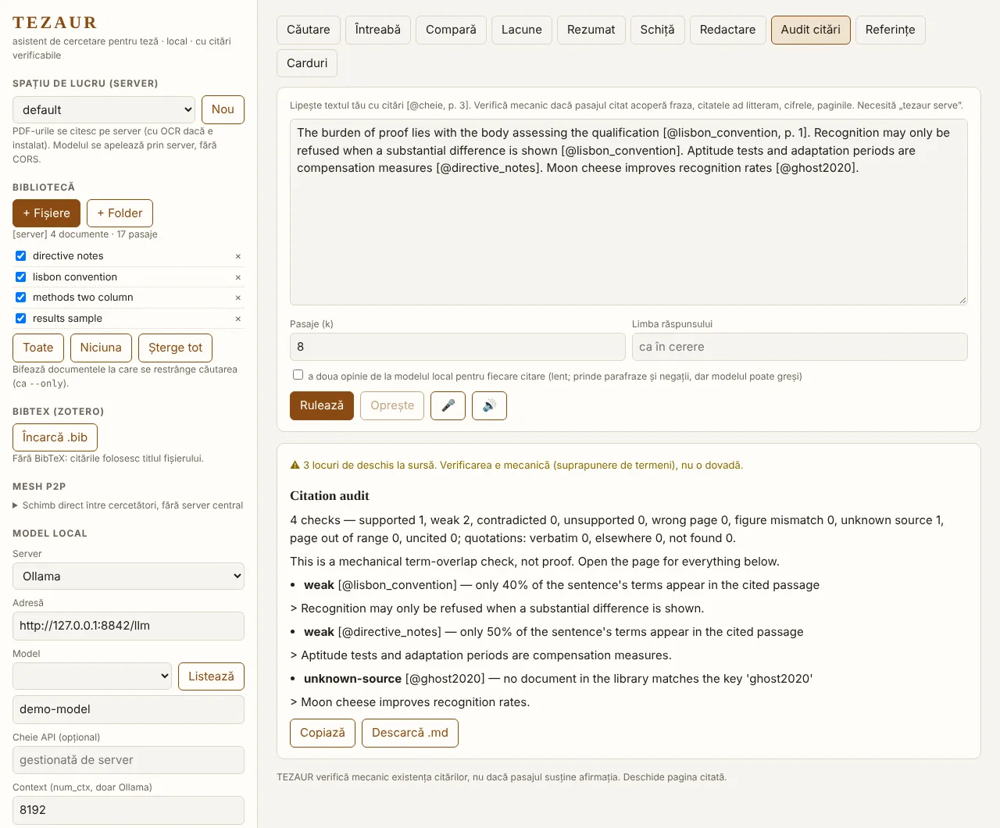
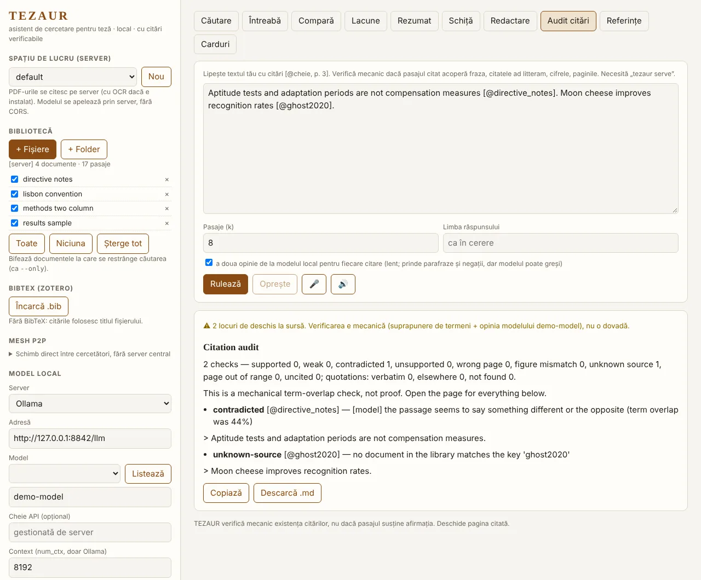
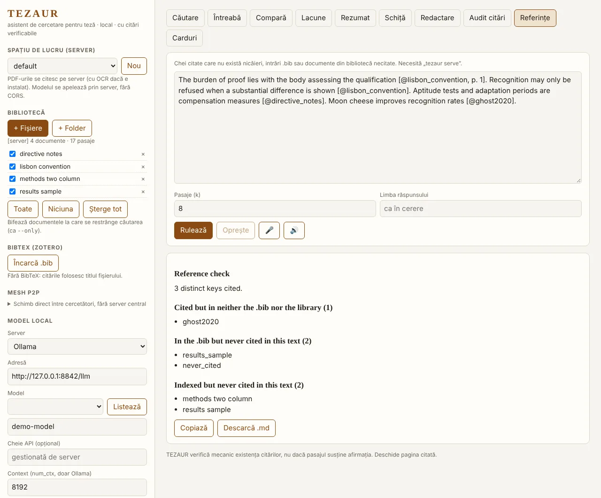
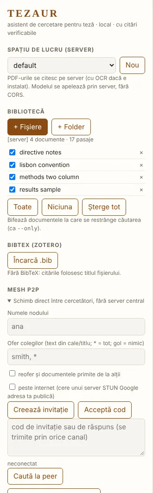
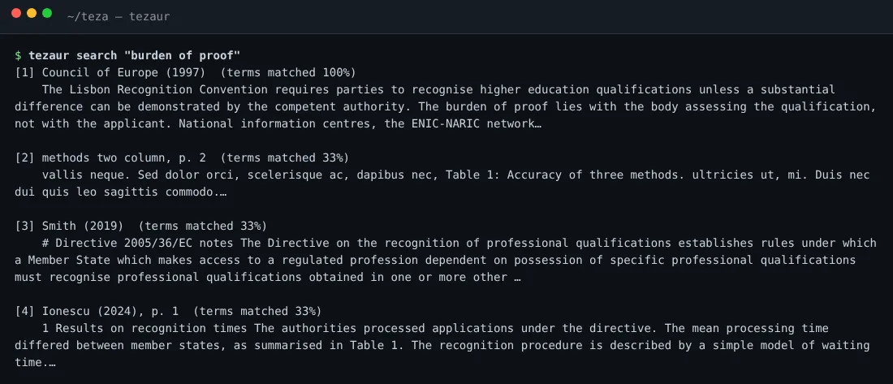
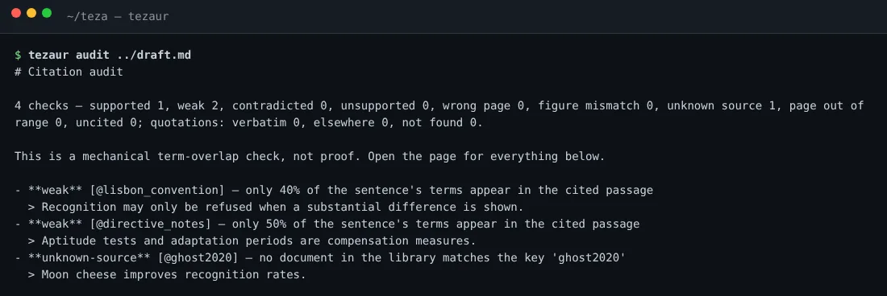
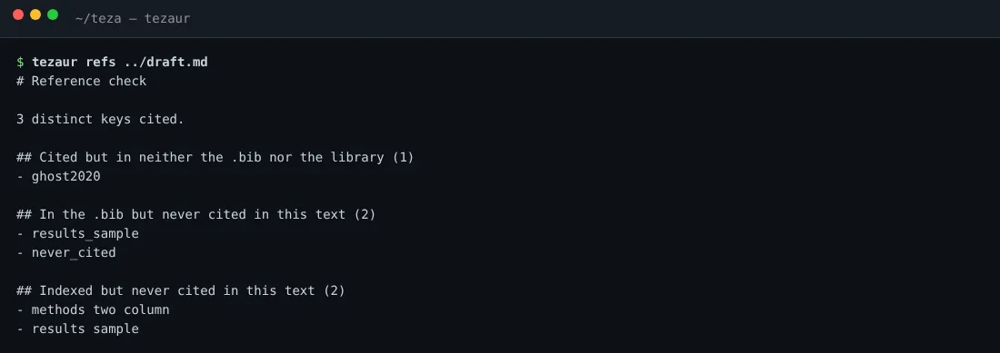
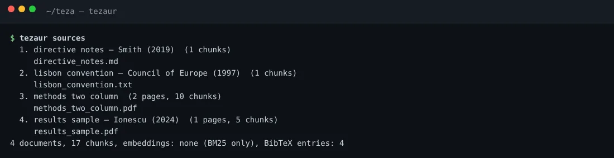
Capturi ale aplicației rulate local pe o bibliotecă demonstrativă. Modelul de limbaj din capturi este simulat (un server fals, pentru a arăta fluxul); verificările mecanice, extragerea din PDF, indexul și căutarea sunt reale. Click pe imagine pentru mărire.
13 tutoriale scurte, subtitrate în 8 limbi.
Aplicația web, linia de comandă, PDF cu tabele și ecuații, auditul citărilor, MCP, serverul, Mesh P2P și instalarea. Alege limba subtitrărilor; o poți schimba și din meniul CC al playerului.
Înregistrate pe aplicația reală (interfața web e în română; ieșirile din terminal sunt ale binarului real). Modelul de limbaj din demo este simulat (răspuns fix, cu o citare inventată ca să se vadă verificatorul), iar comenzile de instalare din tutorialul 13 sunt doar afișate, nu rulate în înregistrare. Fără voce; explicațiile sunt în subtitrări. Traducerile în fr, it, es, pt, de, hu sunt automate și nu au fost revizuite de vorbitori nativi. Fișierele (.mp4 cu 8 piste de subtitrare, .vtt) sunt în assets/tutorials/; se regenerează cu scripts/tutorials/make.py.
78 de variante, câte o captură fiecare.
Fiecare captură e etichetată după ce a rulat cu adevărat. Nicio aplicație terță (Obsidian, Word, Zotero, Slack…) n-a fost pornită: la acelea vezi ieșirea codului nostru sau fișierul livrat, nu o fereastră a aplicației gazdă. Modelul de limbaj din toate capturile este simulat.
Un singur nucleu. ~40 de suprafețe.
Scrii și citești
Conectezi AI-ul
Îl porți cu tine
Echipă și colegi
Onest: integrările sunt verificate contra unor simulări, nu în aplicațiile reale. Un meta-installer le detectează și le instalează, cu dezinstalare completă.
~90 de moduri de a-l avea lângă tine.
Filtrează după categorie sau caută. Fiecare variantă are o stare onestă: rulată, simulată sau doar scrisă.
O comandă. Detectează tot și instalează peste tot.
Detectează
Claude Desktop/Code, Cursor, Windsurf, VS Code, Vim/Neovim, Emacs, Sublime, Notepad++, vault-uri Obsidian, Joplin, Logseq, Zotero, browsere, pandoc, Jupyter, foldere WordPress/DokuWiki/MediaWiki, telefoane Android, stick-uri PortableApps, gazde ssh, noduri TEZAUR din LAN.
Reversibil
Copie de siguranță o singură dată, registru în ~/.tezaur/installed.json, dezinstalare completă cu uninstall. Opțiuni: --only, --skip, --all, --remote user@host.
Onest
Ieșirea de mai sus e ilustrativă. Installer-ul a fost testat într-un director home fals, cu aplicații false — nu pe un sistem real. Rulează întâi scanarea.
Cercetători independenți, conectați direct.
Fiecare nod e un TEZAUR obișnuit care alege ce oferă. Fără cont, fără cloud, fără intermediar.
tezaur mesh search "…"tezaur mesh pull anatezaur mesh export x.tzbpanoul „Mesh P2P”Nimic nu e oferit până nu spui tu.
# alegi ce oferi (implicit: nimic) $ tezaur mesh share smith lisbon # adaugi un coleg, cu token $ tezaur mesh add ana http://192.168.1.20:8787 --token X # sau îi găsești în LAN $ tezaur mesh discover $ tezaur mesh search "burden of proof" $ tezaur mesh pull ana # peste internet, fără porturi deschise $ tezaur mesh add lab URL --proxy socks5h://127.0.0.1:9050
Ce garantează designul
- Un coleg vede doar fragmente din documentele partajate — nu răspunsurile, nu restul bibliotecii, nu modelul tău
- Documentele primite nu se re-oferă (decât cu
--relay) - Căi izolate în
mesh/<coleg>/; același hash nu se stochează de două ori - Pasajele primite sunt marcate
[via peer]în citare
Limite, spuse direct
- Transport HTTP simplu + token: în afara LAN folosește VPN, Tor sau proxy HTTPS
- Textul primit e nesigur (injecție de prompt, fapte false): verifică înainte să citezi
- Drepturile de autor rămân problema ta: partajează notițe și materiale open-access
- Testat între două servere pe aceeași mașină și două Chromium prin WebRTC. Netestat: mașini diferite, NAT/STUN, Tor, mDNS pe Wi-Fi real
Cărțile tale rămân la tine.
conturi
Nu există server TEZAUR, telemetrie sau abonament.
mașină
Indexul și modelul stau pe calculatorul tău. Funcționează offline; doar comenzile online de mai jos și dictarea din browser folosesc rețeaua.
comenzi online
lit, refs --online și oai, doar la cerere, cu avertisment înainte de trimitere.
Cod deschis, licență MIT. Poți citi fiecare linie care îți atinge documentele.
Ce a fost măsurat — și ce nu.
Verificat
- Fraze copiate din sursă: 6/6 acceptate
- Sursă greșită: 3/3 prinse · fără legătură: 4/4
- Contradicții: 4/6 semnalate (3 prin cifre; negațiile scapă)
- 61 de teste Rust + teste cap-coadă (CLI, API, MCP, browser)
- Căutare ~0,2 s pe 6 M de cuvinte
Neverificat sau slab
- Parafraze: 0/6 recunoscute de audit mecanic
- Negații: ratate (de aici
--semantic) - Niciun model real, niciun serviciu OpenAlex/Crossref real atins în teste
- Integrările în aplicațiile reale și Mesh-ul între mașini diferite: netestate
- Fără utilizatori externi încă
Auditul nu dovedește adevărul. Îți arată în ce pagină trebuie să deschizi cartea.
Nu înlocuiește Zotero. Îl completează cu un strat de audit.
| Criteriu | TEZAUR | RAG local generic | Cloud academic |
|---|---|---|---|
| Rulează local, gratuit | da | da | nu |
| Citare cu pagină | da | da | da |
| Audit al textului tău pe pagina citată | da (mecanic) | nu | plătit, doar cloud |
| Citate ad litteram + cifre verificate | da | nu | parțial |
| Chitanțe de proveniență + declarație AI | da | nu | nu |
| Literatură mondială, rezumate, tabele | doar căutare | nu | da |
| PDF avansat (tabele, ecuații) | euristic (0.4) | uneori | da |
Detalii și surse în COMPETITION.md. Concurenții n-au fost rulați de autor; comparația de calitate nu e măsurată.
Pune-ți biblioteca sub control.
# indexează-ți documentele $ tezaur ingest ~/Teza/surse # întreabă, cu citări $ tezaur ask "Cine poartă sarcina probei?" --receipt r.json # verifică-ți textul pagină cu pagină $ tezaur audit teza.md --fail ✓ supported ✗ wrong-page ✗ number-mismatch ✗ quote-not-found # panoul web + API + MCP $ tezaur serve
© 2026 Alexio · trom.tf · licență MIT · parte din mișcarea trade-free